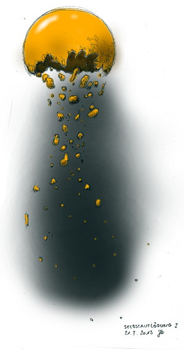

... über mich
Geboren 1966 in Bonn und
aufgewachsen nahe Ahrweiler in der Eifel.
1992 /1993 Ausbildung zum Tischler, danach
bis 1997 Maschinenbaustudium an der RFH in Köln.
Nach einem Berufseinstieg als Softwareingenieur in Aachen bin ich nun
seit 2004 Ingenieur in der Messtechnik in der Physikalisch Technischen Bundesanstalt Braunschweig.
Derzeit lebe ich mit meiner Familie in einem Dorf zwischen Hildesheim und Braunschweig.
Seit der Schulzeit male und zeichne ich gerne, eine Leidenschaft, die ich bis heute beibehalten habe.
Im Laufe der Zeit hat sich der Fokus der Motive dabei immer stärker auf surreale, traumhafte
Darstellungen gelegt, auf die stille Betrachtung eines isolierten, ruhenden Details hinter der
offensichtlichen Wahrnehmung in der tosenden Gesamtheit des Sphärenlaufs.
Daneben gibt es Einblicke und Impressionen auf unser eigenes, tiefstes und innerstes Wesen.
... Danksagung
Das Schaffen der Bilder und Erstellen dieser Web-Seiten war nur durch Unterstützung aus meinem persönlichen sozialen Umfeld möglich.
Mein Dank gilt daher zunächst allen Ungenannten, die mich auf verschiedenste Weise unterstützt haben, teilweise womöglich ohne dass ich es gemerkt habe.
Namentlich möchte ich aber meiner Frau Ilke Kirchhoff danken, die mich in meinem schöpferischen Schaffen bestärkt und meine Schrullen toleriert.
Ein langjähriger Unterstützer, Freund und Mäzen ist weiterhin Herr Dr. Gunter Heim mit dem ich lange philosophische Gespräche im allgemeinen und über die Bilder im besonderen geführt habe.
→ seelengrund.de
im Oktober 2018
